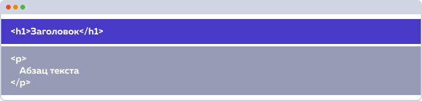
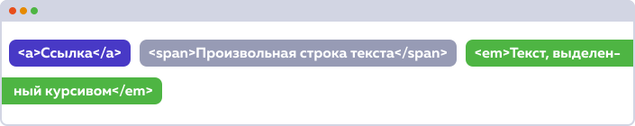
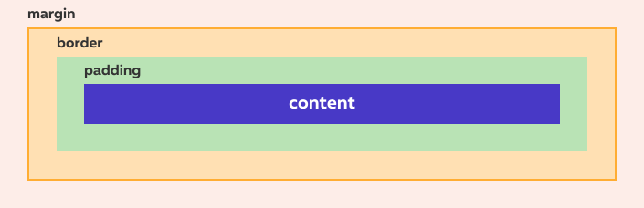
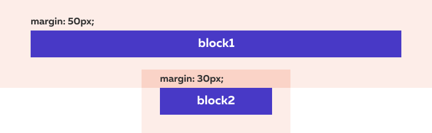
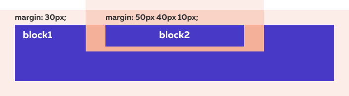
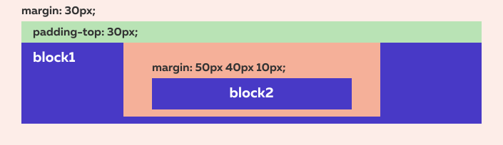

Блочные боксы
Каждому HTML-элементу на странице соответствует прямоугольная область. Такие области называются боксами. Самые распространённые типы боксов — блочные и строчные.
Блочный бокс — это крупная неразрывная прямоугольная область на странице. По умолчанию блочным боксом обладают крупные поточные элементы:

Блочные боксы имеют следующие особенности:
- До и после блочного бокса существует перенос строки.
- Для блочных боксов можно задавать ширину, высоту, внутренние и внешние отступы.
- Занимают всё доступное пространство по горизонтали.
Блочными боксами по умолчанию обладают такие теги как: <p>, <h1>, <h2>, <ul> и так далее.
Ещё один важный тег с блочным боксом — это тег <div>, который обозначает просто «блок» или «прямоугольный контейнер». Этот тег чаще всего используется для создания сеток.
Существуют и более сложные типы боксов, им будет посвящен второй блок части.
Строчные боксы
Строчные боксы — противоположность блочных. Строчные боксы располагаются друг за другом в одной строке, могут разрываться и находиться на нескольких строках:

Особенности строчных боксов:
- До и после строчного бокса отсутствуют переносы строки.
- Ширина и высота строчного бокса зависит только от его содержания, задать размеры с помощью CSS нельзя.
- Можно задавать только горизонтальные отступы.
Теги со строчным боксом по умолчанию: <a>, <strong>, <em>, <span> и так далее.
Эти теги предназначены для оформления текста на уровне небольших фраз и отдельных слов.
А теги с блочным боксом, напротив, предназначены для разметки крупных блоков текста (заголовки, абзацы, списки) и создания сетки.
Стандартная блочная модель
Стандартная блочная модель отвечает на основной вопрос:
Сколько же в итоге места будет занимать бокс?
Ответ следующий:
Область, занимаемая блочным боксом, складывается из его ширины и высоты содержания, внутренних и внешних отступов, ширины рамок.
Для строчных боксов есть свои особенности, которые мы опишем позже.
Схема блочной модели:

- ширина/высота содержания — свойства
width и height (синий прямоугольник на схеме);
- внутренние отступы — свойство
padding;
- рамки — свойство
border;
- внешние отступы — свойство
margin.
«Схлопывание» внешних отступов
Во втором блоке части разберём некоторые важные тонкости блочной модели. И начнём с внешних отступов (margin).
Вертикальный отступ между двумя соседними элементами равен максимальному отступу между ними. Если отступ одного элемента равен 50px, а второго 30px, то отступ между ними будет 50px:

Этот эффект называется эффектом «схлопывания» внешних отступов.
Горизонтальные отступы между элементами просто складываются. Например, горизонтальный отступ между двумя элементами с отступами 30px будет равен 60px.
«Выпадание» внешних отступов
«Выпадание» — это ещё один эффект, связанный с вертикальными внешними отступами.
Если внутри родительского блока расположить блок и задать ему отступ сверху, то внутренний блок прижмётся к верхнему краю родительского, а у родительского элемента появится отступ сверху. То есть верхний отступ внутреннего элемента «выпадает» из родительского элемента:

Если у родительского элемента тоже был задан внешний отступ, то выберется максимальный отступ между собственным и «выпавшим».
Чтобы избавиться от эффекта выпадания, можно задать родительскому элементу внутренний отступ (паддинг) сверху или добавить рамку сверху:

Внешние и внутренние отступы всегда складываются.
Как отцентровать элемент?
Чтобы отцентровать блочный элемент, нужно выполнить следующие действия:
- Задать элементу ширину, которая меньше ширины родительского контейнера.
- Задать для внешних отступов справа и слева значение
auto.
Примеры кода:
selector {
width: 100px;
margin: 0 auto;
}
selector {
width: 100px;
margin-left: auto;
margin-right: auto;
}
Изменяем блочную модель, свойство box-sizing
Проблему с шириной тянущихся полей решить сложно. Идеальным вариантом было бы изменение алгоритма расчёта ширины элемента, чтобы свойство width задавало не ширину содержания, а общую ширину.
К счастью, такая возможность в CSS есть. Реализуется она с помощью свойства
box-sizing.
Это свойство имеет два значения:
content-box — значение по умолчанию, соответствует стандартной блочной модели.border-box — изменяет режим расчёта ширины элемента на описанный выше: теперь ширина элемента включает и рамку, и внутренние отступы и, собственно, ширину содержания самого элемента.
Относительное позиционирование
CSS-свойство position задает режим позиционирования элементов. Значением по умолчанию является static, которое означает «обычное позиционирование».
Значение relative обозначает «относительное позиционирование». Относительно спозиционированный элемент можно перемещать относительно его исходного положения.
Относительно спозиционированный элемент остается в потоке документа, а при его перемещении наблюдаются интересные эффекты. Для начала просто зададим относительное позиционирование выбранному блоку.
Свойства top, bottom, left и right позволяют сместить относительно спозиционированный элемент вверх, вниз, влево или вправо относительно его исходного положения. Значения этих свойств обычно задается в пикселях, но можно использовать и другие единицы измерения CSS.
Абсолютное позиционирование
Значение absolute свойства position задаёт элементу абсолютное позиционирование.
Абсолютно спозиционированные элементы обладают следующими особенностями:.
- Выпадают из потока документа. Место, которое они занимали, становится как бы пустым и его занимают соседние элементы.
- Ширина по умолчанию зависит от содержимого (а не растягивается на всю доступную ширину).
- Остаются на том же месте, где были, если не заданы значения свойств
top, left, right, bottom.
Свойства top, left, right, bottom по-разному работают для элементов с абсолютным и относительным позиционированием.
Если для «относительных» элементов эти свойства задают смещение относительно исходной позиции, то для «абсолютных» элементов они задают расположение относительно некой системы координат, как для точки на графике.
По умолчанию такой системой координат является окно браузера, а точки начала координат привязаны к его углам.
Свойство left задает отступ от левого края окна браузера до левого края абсолютно спозиционированного элемента. Если свойству задать отрицательное значение, то элемент сместится за левый край браузера (при этом полоса прокрутки не появится).
Отрицательное значение bottom затолкнет элемент за нижний край окна браузера и при этом появится полоса прокрутки.
По умолчанию «абсолютные» элементы позиционируются в системе координат, привязанной к окну браузера. Однако, систему координат можно изменить.
Если какой-нибудь из родителей «абсолютного» элемента имеет относительное позиционирование, то элемент будет позиционироваться относительно этого родителя. Если среди родителей несколько относительно позиционированных элементов, то «абсолютный» элемент будет позиционироваться относительно ближайшего из них.
В этом задании вы увидите, как происходит смена системы координат (и соответственно точек отсчета). Интересно, что позиционирование по умолчанию отличается от позиционирования внутри тега body.
Неявная точка отсчета — это то место, где находился элемент до того, как ему задали абсолютное позиционирование. Если «абсолютному» элементу не задавать свойства left … bottom, то он выпадет из потока, но останется на прежнем месте.
Кстати, когда значение для left не задано, оно равно auto. То же верно и для оставшихся трёх свойств. С помощью значения auto можно возвращать «абсолютные» элементы на исходное положение.
Фиксированное позиционирование
Значение fixed свойства position задаёт элементу фиксированное позиционирование.
Фиксированное позиционирование похоже на абсолютное, но есть и отличия:
- Фиксированный элемент тоже выпадает из потока.
- Фиксированный элемент привязывается к определенной точке в окне браузера и остается на ней всегда, даже при прокрутке страницы.
- Фиксированный элемент можно позиционировать с помощью свойств
top, left, right, bottom, но точка отсчета всегда привязана к окну браузера.
Можете представить себе фиксированный элемент, как стикер, который наклеен на монитор. Такие элементы часто применяют для создания навигационных панелей, привязанных к верхней или нижней части окна браузера.
Липкое позиционирование
Значение sticky свойства position задаёт элементу липкое позиционирование.
Липкое позиционирование похоже на фиксированное, но есть и отличия:
- Липкий элемент одновременно выпадает и не выпадает из потока.
- Липкий элемент тоже привязывается к определенной точке в окне браузера и остается на ней всегда, даже при прокрутке страницы.
- Липкий элемент может перемещаться только в пределах контейнера, в котором находится. Если он будет единственным ребёнком,то у него не будет элементов-братьев, поверх которых он может перемещаться.
- Липкий элемент можно позиционировать с помощью свойств
top, left, right, bottom, но точка отсчета всегда привязана к окну браузера.
«Липкое» позиционирование состоит из двух основных частей: «липкого» элемента и «липкого» контейнера.
«Липкий» элемент — это элемент, которому мы задали position: sticky. Элемент будет становиться плавающим, как только область видимости достигнет определённой позиции, например top: 0px.
«Липкий» контейнер — это HTML-элемент, который оборачивает «липкий» элемент. Это максимальная область, в которой может перемещаться наш элемент.
Когда вы задаёте элементу position: sticky, его родитель автоматически становится «липким» контейнером!
Очень важно это запомнить! Контейнер будет являться областью видимости для элемента. «Липкий» элемент не может выйти за пределы своего «липкого» контейнера.
Относительное (или статичное) — «липкий» элемент похож на элемент со статическим или относительным позиционированием поскольку сохраняет свою естественную позицию в DOM (остаётся в потоке).
Фиксированное — когда элемент залипает, то ведёт себя как будто у него заданы стили position: fixed, остаётся на той же позиции в области видимости и вырывается из потока документа.
Абсолютное — в конце доступной для перемещений области элемент останавливается и остаётся поверх другого элемента. Точно также, как ведёт себя абсолютно спозиционированный элемент в контейнере с position: relative.
z-index или кто кого перекроет
Если в одном месте страницы оказываются несколько «абсолютных» блоков, то они перекрывают друг друга. По умолчанию выше оказывается тот блок, который расположен дальше в коде страницы.
C помощью CSS-свойства z-index можно управлять тем, как перекрываются блоки. Значением этого свойства может быть целое число. Чем больше z-index, тем выше располагается блок.
Cвойство z-index работает для элементов, у которых position задано как absolute, fixed и relative. Таким образом, «относительный» элемент может перекрывать «абсолютный».
z-index влияет только на соседние элементы в пределах родительского блока.